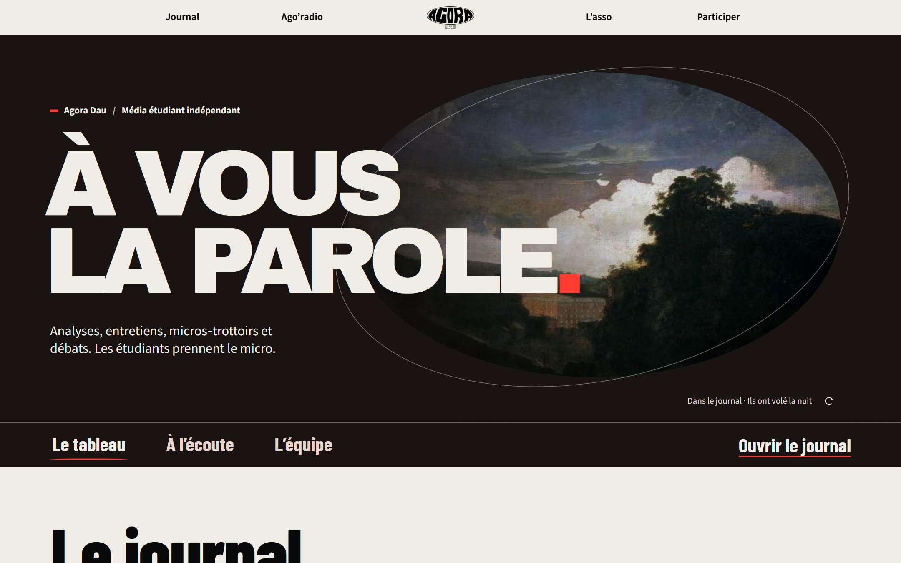

Agora Dau
The journal, the podcast and the association of a student outlet, gathered on a site that feels like a printed page.

Screenshot of the homepage, as it is live.
Context
Agora Dau is an independent student outlet: analyses, interviews, street interviews and a podcast, Ago'radio. With no site of its own, all of it lived in social posts and scattered documents, with no reading order and no memory.
Design decisions
A press aesthetic: warm paper background, black ink, a bright red kept for accents, headlines in Barlow Condensed and a tightly set Archivo Black name. Running text stays in Source Sans 3 for long reading. The home page is laid out like a newspaper front page, and the Ago'radio page switches to a dark background, like a studio.
What was delivered
A static site: the front page, the journal and its analyses, the Ago'radio listening page, the presentation of the association and its teams, a charter against the use of AI, a page to pitch an article or a podcast, and a newsletter. Self-hosted fonts, images in AVIF and WebP.
- Address
- agoradau.pages.dev ↗
- Type
- Editorial site (student media)
- Stack
- HTML · CSS · JS · Jekyll
- Hosting
- Cloudflare Pages
- Languages
- French
- Status
- Live
A similar project?
Get in touch